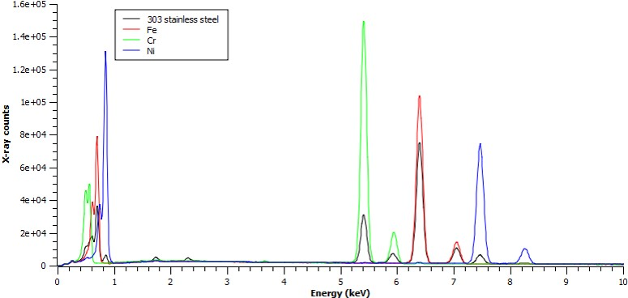
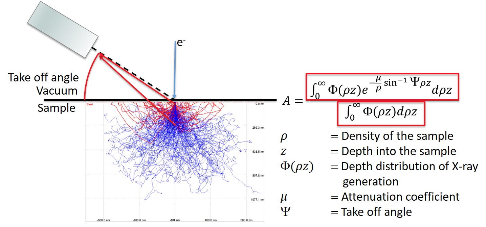
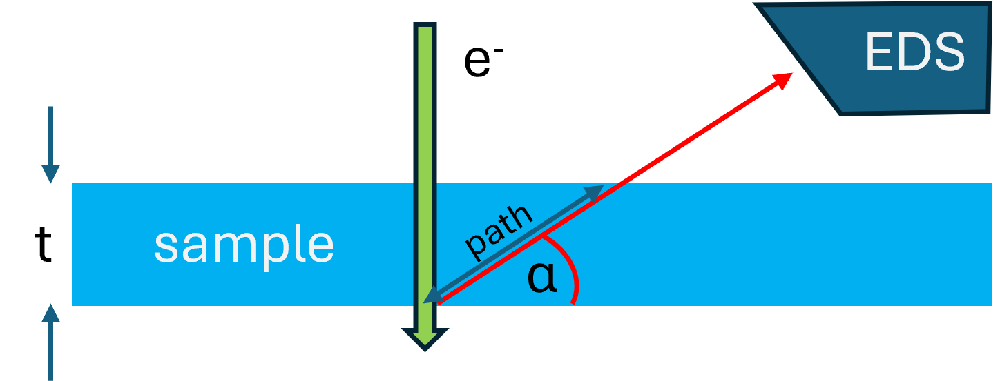
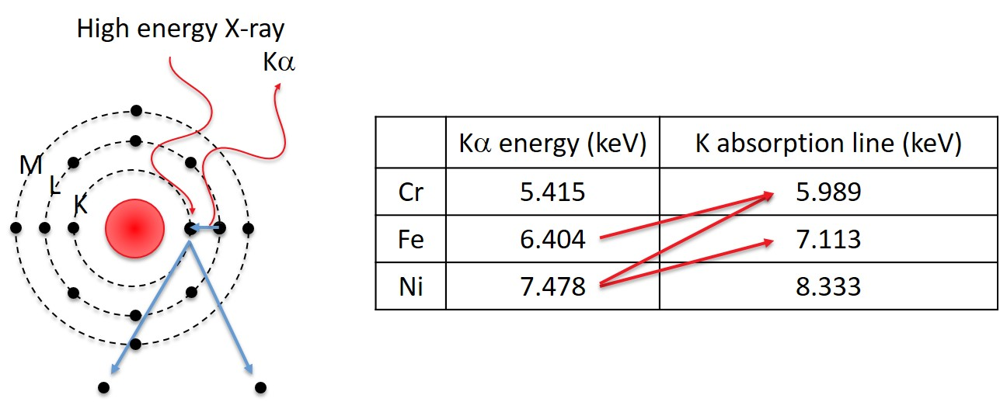

Chapter 4: Spectroscopy
Quantify Spectrum¶
part of
MSE672: Introduction to Transmission Electron Microscopy
by Gerd Duscher, Spring 2026
Microscopy Facilities Institute of Advanced Materials & Manufacturing Materials Science & Engineering The University of Tennessee, Knoxville
Background and methods to analysis and quantification of data acquired with transmission electron microscopes.
First we import the essential libraries¶
All we need here should come with the annaconda or any other package
The xml library will enable us to read the Bruker file.
[3]:
import sys
import importlib.metadata
def test_package(package_name):
"""Test if package exists and returns version or -1"""
try:
version = importlib.metadata.version(package_name)
except importlib.metadata.PackageNotFoundError:
version = '-1'
return version
if test_package('pyTEMlib') < '0.2026.1.1':
print('installing pyTEMlib')
!{sys.executable} -m pip install --upgrade pyTEMlib -q
print('done')
done
[10]:
%matplotlib widget
import matplotlib.pyplot as plt
import numpy as np
## import the configuration files of pyTEMlib (we need access to the data folder)
import pyTEMlib
pyTEMlib.__version__
[10]:
'0.2026.1.3'
Cross-section for EDS in Transmission¶
For thin samples such as used in transmission electron microscopy absorption, and fluorescence, can be neglected Chapter 2: Pennycook and Nellist, 2011. If multiple scattering and channelling is avoided the EDS partial scattering cross-section for a single atom of element x is given by Macarthur et al., 2015 and Macarthur et al., 2017:
Where:
\(N_x\): the volumetric number density of the elemental species being detected,
\(t\): the sample thickness (same length unit as volume in N_x),
\(I_x\): is the raw x-ray counts detected from the sample (a.u.),
\(i_0\): is the probe current (A),
\(\tau\) is the exposure time (s),
\(e\) is the electronic charge (C).
A more consistent way would be to relate the cross-section with areal density \(n_x\) and to use incident flux \(I_0\) like in the case of EELS earlier.
Where:
$n_x = \rho_x *t $: the areal density of the elemental species being detected,
\(I_0 = i_0*\tau/e\): incident flux: total number of electrons the sample is exposed to during the experiment
Comparison with EELS¶
Above formula is the same as derived for EELS earlier. The difference is that \(I_x^{EELS}\) is the number of electrons that scattered inelastically per energy transfer (and momentum transfer).
While \(I_x^{EDS}\) is the raw counts of X-rays that originate in the relaxation of excitation from a specific core level of element \(x\). This implies that the competing relaxation process of generation of Auger electrons is the same for all elements. >This is a fundamental requirement for quantification of both EDS and Auger spectroscopy.
The relationship between \(\sigma_{x}^{EDS}\) and \(\sigma_{x}^{EELS}\) is, therfore, a linear one. And we need to determine the efficiency of X-ray detection (not generation) per EDS system, which also has an take-off angle dependence.
However, the linear dependency is not between the EELS and EDS cross section as defined here, but the cross section of the core excitation, as introduced by Egerton. In that approach the inelastic scattering of lower-energy core-losses are approximated together with the background caused by plasmon losses.
Therefore, in the code cell below we need to subtract the background from lower-level excitations from the core-level in question.
[11]:
z = 38
def get_eds_xsection(Xsection, energy_scale, start_bgd, end_bgd):
background = pyTEMlib.eels_tools.power_law_background(Xsection, energy_scale, [start_bgd, end_bgd], verbose=False)
cross_section_core = Xsection- background[0]
cross_section_core[cross_section_core < 0] = 0.0
cross_section_core[energy_scale < end_bgd] = 0.0
return cross_section_core
energy_scale = np.arange(10,20000)
Xsection = pyTEMlib.eels_tools.xsec_xrpa(energy_scale, 200, z, 20000. )
edge_info = pyTEMlib.eels_tools.get_x_sections(z)
if 'K1' in edge_info:
start_bgd = edge_info['K1']['onset']*.8
end_bgd = edge_info['K1']['onset']-5
K_eds_xsection = get_eds_xsection(Xsection, energy_scale, start_bgd, end_bgd)
if 'L3' in edge_info:
start_bgd = edge_info['L3']['onset']*.8
end_bgd = edge_info['L3']['onset']-5
L_eds_xsection = get_eds_xsection(Xsection, energy_scale, start_bgd, end_bgd)
if 'M5' in edge_info:
print(edge_info['M5']['onset'])
start_bgd = edge_info['M5']['onset']*.8
end_bgd = edge_info['M5']['onset']-5
M_eds_xsection = get_eds_xsection(Xsection, energy_scale, start_bgd, end_bgd)
else:
M_eds_xsection = None
background = pyTEMlib.eels_tools.power_law_background(Xsection, energy_scale, [80, 95], verbose=False)
plt.figure()
plt.plot(energy_scale, np.log(1+Xsection) , label='EELS X-section')
plt.plot(energy_scale, np.log(1+background[0]), label='L-core background')
#plt.plot(energy_scale, np.log(1+L_eds_xsection), label='L-level X-section')
plt.plot(energy_scale, np.log(1+K_eds_xsection), label='K-level X-section')
if M_eds_xsection is not None:
plt.plot(energy_scale, np.log(1+M_eds_xsection), label='M-level X-section')
plt.xlim(20,5000)
plt.ylim(0, 10)
plt.xlabel ('energy (eV)')
plt.ylabel('cross section (barns)')
plt.legend();
133.1
Cross-section for EDS¶
Of course we do not need the dependence of the cross section on energy but the sum.
The relevant functions will then be:
Comparison to k-factors to Cliff Lorimer
k-factors are in weight%
cross-sections in atom%
The above cross sections are for the excitation of a specific core-level of an atom. The sum of the experimental detected X-ray lines of one family are a fraction of those cross-sections.
Given the large discrepancy of excitation probabilities of the different core-levels, we use the lower-energy cross-sections if possible. Adding up the different families will result in sup-percent change in the total percentage of excitation probabilties.
Varambhia et al. used the linear thickness dependence of the signal to correlate the cross sections of EDS and EELS. This is an excellent way to callibrate the EDS system. And the correlation factor between EELS and EDS should be same for different X-Ray peak families of all elements. The similar method can be used to callibrate the cross section of ADF intensities.
k-Factor for relative composition¶
the k-factor for elements A and B is defined as:
\(Q\) [ionizations/e\(^-\) (atoms / cm\(^2\))): ionization cross section
\(\omega\) [X-rays/ ionization]: fluorescent yield = number of X-rays generated per ionization
\(A\) [g/moles]: atomic weight
\(a\) relative transition probability (a) of the same series of X-rays (\(\alpha\ to\ \beta\))
\(\varepsilon\) detector efficiencies for lines. If we look back to the Ch4_14 and the generation of X-rays, we see that we eliminated the variables of the sample (areal density) , because they are the same.
rewriting above equation we see that:
We do not worry about the units. Since we are fitting all lines we can omit the relative transition probability.
The main uncertainties are: The cross section, and the fluorescent yield.
There are three customary reference elements for the k-factor:
silicon (semiconductor industrie and literature )
iron (materials science)
carbon (ThermoFisher seems to be using that)
Using silicon we need the \(k_{ASi}\) factors and
Only for thicker samples we need the density and thickness for absorption corrections.
Open a EDS spectrum file¶
Here the EDS-STO.emd file in the example_data folder.
[12]:
import os
if 'google.colab' in sys.modules:
if not os.path.exists('./EDS.rto'):
!wget https://github.com/gduscher/MSE672-Introduction-to-TEM/raw/main/example_data/EDS.rto'
!wget https://github.com/gduscher/MSE672-Introduction-to-TEM/raw/main/example_data/1EELS Acquire (low-loss).dm3
example_path = "."
else:
example_path = os.path.join(os.path.abspath(""), "../example_data")
file_widget = pyTEMlib.file_tools.FileWidget(dir_name=example_path)
[4]:
spectrum = file_widget.selected_dataset
view = spectrum.plot()
spectrum.sum()
[4]:
np.uint64(190830)
[13]:
### Does not work for spectrum images
#
start = np.searchsorted(spectrum.energy_scale.values, 100)
energy_scale = spectrum.energy_scale.values[start:]
spectrum.metadata['EDS']['detector']['layers'] = {13: {'thickness': 0.05*1e-6, 'Z': 13, 'element': 'Al'}, }
spectrum.metadata['EDS']['detector']['SiDeadThickness'] = .13 *1e-6 # in m
spectrum.metadata['EDS']['detector']['SiLiveThickness'] = 0.05 # in m
spectrum.metadata['EDS']['detector']['detector_area'] = 30 * 1e-6 #in m2
spectrum.metadata['EDS']['detector']['energy_resolution'] = 125 # in eV
spectrum.metadata['EDS']['detector']['start_energy'] = 120 # in eV
spectrum.metadata['EDS']['detector']['start_channel'] = np.searchsorted(spectrum.energy_scale.values,120)
detector_Efficiency= pyTEMlib.eds_tools.detector_response(spectrum) # tags, spectrum.energy_scale.values[start:])
spectrum.metadata['EDS']['detector'].setdefault('start_energy', 120)
spectrum.metadata['EDS']['detector']['start_channel'] = np.searchsorted(spectrum.energy_scale.values, spectrum.metadata['EDS']['detector']['start_energy'])
start = spectrum.metadata['EDS']['detector']['start_channel']
spectrum[:spectrum.metadata['EDS']['detector']['start_channel']] = 0.
spectrum.metadata['EDS']['detector']['detector_efficiency'] = detector_Efficiency
[14]:
spectrum.metadata['EDS']['detector'].keys()
[14]:
dict_keys(['layers', 'SiDeadThickness', 'SiLiveThickness', 'detector_area', 'energy_resolution', 'start_energy', 'start_channel', 'ElevationAngle', 'AzimuthAngle', 'RealTime', 'LiveTime', 'detector_efficiency'])
[15]:
dataset = spectrum
dataset.view_original_metadata()
Core :
MetadataDefinitionVersion : 7.9
MetadataSchemaVersion : v1/2013/07
guid : 00000000000000000000000000000000
Instrument :
ControlSoftwareVersion : 3.21.1
Manufacturer : FEI Company
InstrumentId : 4018
InstrumentClass : Titan
InstrumentModel : Spectra
ComputerName : TITAN52340180
Acquisition :
AcquisitionStartDatetime :
DateTime : 1744132943
AcquisitionDatetime :
DateTime : 1744132970
BeamType :
SourceType : XFEG
Optics :
GunLensSetting : 783.09402465820313
ExtractorVoltage : 3600.03662109375
AccelerationVoltage : 200000
SpotIndex : 7
C1LensIntensity : -0.45199715939082202
C2LensIntensity : 0.19444500112822424
C3LensIntensity : 0.3542091236880327
ObjectiveLensIntensity : 0.82387587258637041
IntermediateLensIntensity : 0.060336265199823894
DiffractionLensIntensity : 0.19150135873874147
Projector1LensIntensity : 0.28091570010789807
Projector2LensIntensity : 0.91034079367771092
LorentzLensIntensity : 0
MiniCondenserLensIntensity : 0.34343568932091073
BeamConvergence : 0.029997306394484304
ScreenCurrent : 3.2020921599819477e-10
LastMeasuredScreenCurrent : 3.2020921599819477e-10
FullScanFieldOfView :
x : 8.1985106983538468e-09
y : 8.1985106983538468e-09
Focus : -1.7021463355063892e-07
StemFocus : 0
Defocus : -1.7021463355063892e-07
HighMagnificationMode : None
Apertures :
Aperture-0 :
Name : C1
Number : 1
MechanismType : Motorized
Type : Circular
Diameter : 0.002
Enabled : 0
Aperture-1 :
Name : C2
Number : 2
MechanismType : Motorized
Type : Circular
Diameter : 6.9999999999999994e-05
Enabled : 1
Aperture-2 :
Name : C3
Number : 3
MechanismType : Motorized
Type : Circular
Diameter : 0.002
Enabled : 0
Aperture-3 :
Name : OBJ
Number : 4
MechanismType : Motorized
Type : None
Aperture-4 :
Name : SA
Number : 5
MechanismType : Motorized
Type : None
OperatingMode : 2
TemOperatingSubMode : None
ProjectorMode : 1
EFTEMOn : false
ObjectiveLensMode : HM
IlluminationMode : Probe
ProbeMode : 1
CameraLength : 0.090999999999999998
EnergyFilter :
EntranceApertureType :
Stage :
Position :
x : -8.8828500000001313e-06
y : -7.3590462000000029e-05
z : -8.8422389105847642e-05
AlphaTilt : -0.017956972000000068
BetaTilt : 0.013796762563288212
HolderType : FEI Double Tilt
Scan :
ScanSize :
width : 0
height : 0
MainsLockOn : false
FrameTime : 4.7841439999999995
ScanRotation : 0
Vacuum :
VacuumMode : Ready
Detectors :
Detector-0 :
DetectorName : BF-S
DetectorType : ScanningDetector
Inserted : false
Enabled : true
Gain : 39
Offset : 0
CollectionAngleRange :
begin : 0
end : 0
Detector-1 :
DetectorName : BM-Ceta
DetectorType : ImagingDetector
ExposureMode :
Binning :
width : 4
height : 4
ReadOutArea :
left : 0
top : 0
right : 1024
bottom : 1024
ExposureTime : 0.10000000000000001
Shutters :
Shutter-0 :
Position : PostSpecimen
Type : Electrostatic
DarkGainCorrectionType : 3
Detector-2 :
DetectorName : DF-S
DetectorType : ScanningDetector
Inserted : false
Enabled : true
Gain : 45.659520000000015
Offset : -4.0012542384708496e-08
CollectionAngleRange :
begin : 0
end : 0
Detector-3 :
DetectorName : EF-CCD
DetectorType : ImagingDetector
ExposureMode :
Binning :
width : 4
height : 4
ReadOutArea :
left : 0
top : 0
right : 1024
bottom : 1024
ExposureTime : 0.10000000000000001
Shutters :
Shutter-0 :
Position : PostSpecimen
Type : Electrostatic
DarkGainCorrectionType : 3
Detector-4 :
DetectorName : Flucam
DetectorType : ImagingDetector
ExposureMode :
Gain : 0.69999999999999996
Binning :
width : 1
height : 1
ReadOutArea :
left : 0
top : 0
right : 1024
bottom : 1024
ExposureTime : 0.012800000000000001
Shutters :
Shutter-0 :
Position : None
Type : Electrostatic
DarkGainCorrectionType : 3
Detector-5 :
DetectorName : HAADF
DetectorType : ScanningDetector
Inserted : true
Enabled : true
Gain : 21.544316350646859
Offset : -1.752
CollectionAngleRange :
begin : 0.072878546905260952
end : 0.20000000000000001
Detector-6 :
DetectorName : SuperXG21
DetectorType : AnalyticalDetector
Inserted : true
Enabled : true
ElevationAngle : 0.31415926999999999
AzimuthAngle : 0.78539816339744828
CollectionAngle : 0.69999999999999996
Dispersion : 5
PulseProcessTime : 3.0000000000000001e-06
RealTime : 26.200044074999997
LiveTime : 25.717295459544289
InputCountRate : 1334
OutputCountRate : 1320
AnalyticalDetectorShutterState : 4
OffsetEnergy : -250
ElectronicsNoise : 25.359999999999999
BeginEnergy : 120
Detector-7 :
DetectorName : SuperXG22
DetectorType : AnalyticalDetector
Inserted : true
Enabled : true
ElevationAngle : 0.31415926999999999
AzimuthAngle : 2.3561944901923448
CollectionAngle : 0.69999999999999996
Dispersion : 5
PulseProcessTime : 3.0000000000000001e-06
RealTime : 26.234130274999998
LiveTime : 25.942911392788901
InputCountRate : 242
OutputCountRate : 240
AnalyticalDetectorShutterState : 4
OffsetEnergy : -250
ElectronicsNoise : 25.170000000000002
BeginEnergy : 120
Detector-8 :
DetectorName : SuperXG23
DetectorType : AnalyticalDetector
Inserted : true
Enabled : true
ElevationAngle : 0.31415926999999999
AzimuthAngle : 3.9269908169872414
CollectionAngle : 0.69999999999999996
Dispersion : 5
PulseProcessTime : 3.0000000000000001e-06
RealTime : 26.2338126
LiveTime : 25.204968704665891
InputCountRate : 2978
OutputCountRate : 2859
AnalyticalDetectorShutterState : 4
OffsetEnergy : -250
ElectronicsNoise : 24.350000000000001
BeginEnergy : 120
Detector-9 :
DetectorName : SuperXG24
DetectorType : AnalyticalDetector
Inserted : true
Enabled : true
ElevationAngle : 0.31415926999999999
AzimuthAngle : 5.497787143782138
CollectionAngle : 0.69999999999999996
Dispersion : 5
PulseProcessTime : 3.0000000000000001e-06
RealTime : 26.252377599999999
LiveTime : 25.576678845541675
InputCountRate : 2936
OutputCountRate : 2841
AnalyticalDetectorShutterState : 4
OffsetEnergy : -250
ElectronicsNoise : 25.460000000000001
BeginEnergy : 120
BinaryResult :
AcquisitionUnit :
CompositionType :
DetectorIndex : 8
Detector : SuperXG23
Encoding :
Sample :
GasInjectionSystems :
CustomProperties :
Aperture[C1].Name :
type : string
value : 2000
Aperture[C2].Name :
type : string
value : 70
Aperture[C3].Name :
type : string
value : 2000
Aperture[OBJ].Name :
type : string
value : None
Aperture[SA].Name :
type : string
value : None
Detectors[EF-CCD].CommercialName :
type : string
value : Continuum 1065
Detectors[EF-CCD].ElectronCounted :
type : bool
value : 0
Detectors[SuperXG21].BilatThresholdHi :
type : double
value : 0.0050390000000000001
Detectors[SuperXG21].CommercialName :
type : string
value : Super-X G2
Detectors[SuperXG21].DetectorConfigID :
type : string
value : 3101e35a-08ec-4b3d-9108-6aa5d0e49281
Detectors[SuperXG21].DistanceToSample :
type : double
value : 12.42
Detectors[SuperXG21].IncidentAngle :
type : double
value : 0.094596840000000001
Detectors[SuperXG21].KMax :
type : double
value : 180
Detectors[SuperXG21].KMin :
type : double
value : 120
Detectors[SuperXG21].PulsePairResolutionTime :
type : double
value : 4.9999999999999998e-07
Detectors[SuperXG21].SpectrumBeginEnergy :
type : long
value : 120
Detectors[SuperXG22].BilatThresholdHi :
type : double
value : 0.0050390000000000001
Detectors[SuperXG22].CommercialName :
type : string
value : Super-X G2
Detectors[SuperXG22].DetectorConfigID :
type : string
value : 3101e35a-08ec-4b3d-9108-6aa5d0e49281
Detectors[SuperXG22].DistanceToSample :
type : double
value : 12.42
Detectors[SuperXG22].IncidentAngle :
type : double
value : 0.094596840000000001
Detectors[SuperXG22].KMax :
type : double
value : 180
Detectors[SuperXG22].KMin :
type : double
value : 120
Detectors[SuperXG22].PulsePairResolutionTime :
type : double
value : 4.9999999999999998e-07
Detectors[SuperXG22].SpectrumBeginEnergy :
type : long
value : 120
Detectors[SuperXG23].BilatThresholdHi :
type : double
value : 0.0050390000000000001
Detectors[SuperXG23].CommercialName :
type : string
value : Super-X G2
Detectors[SuperXG23].DetectorConfigID :
type : string
value : 3101e35a-08ec-4b3d-9108-6aa5d0e49281
Detectors[SuperXG23].DistanceToSample :
type : double
value : 12.42
Detectors[SuperXG23].IncidentAngle :
type : double
value : 0.094596840000000001
Detectors[SuperXG23].KMax :
type : double
value : 180
Detectors[SuperXG23].KMin :
type : double
value : 120
Detectors[SuperXG23].PulsePairResolutionTime :
type : double
value : 4.9999999999999998e-07
Detectors[SuperXG23].SpectrumBeginEnergy :
type : long
value : 120
Detectors[SuperXG24].BilatThresholdHi :
type : double
value : 0.0050390000000000001
Detectors[SuperXG24].CommercialName :
type : string
value : Super-X G2
Detectors[SuperXG24].DetectorConfigID :
type : string
value : 3101e35a-08ec-4b3d-9108-6aa5d0e49281
Detectors[SuperXG24].DistanceToSample :
type : double
value : 12.42
Detectors[SuperXG24].IncidentAngle :
type : double
value : 0.094596840000000001
Detectors[SuperXG24].KMax :
type : double
value : 180
Detectors[SuperXG24].KMin :
type : double
value : 120
Detectors[SuperXG24].PulsePairResolutionTime :
type : double
value : 4.9999999999999998e-07
Detectors[SuperXG24].SpectrumBeginEnergy :
type : long
value : 120
Optics.MonoSpotSize :
type : string
value : <=11
StemMagnification :
type : double
value : 10000000
AcquisitionSettings :
encoding : uint16
bincount : 4096
StreamEncoding : uint16
Size : 2097152
Element Finding With pyTEMlib¶
The minimum_number_of_peaks determines how many elements will be found.
Increase from 10 to 11 of that parameter will reveal Nb, a common dopant of SrTiO\(_3\)
[17]:
# --------Input -----------
minimum_number_of_peaks = 11
# --------------------------
elements = pyTEMlib.eds_tools.get_elements(dataset, minimum_number_of_peaks, verbose=False)
plt.figure()
plt.plot(dataset.energy_scale,dataset, label = 'spectrum')
pyTEMlib.eds_tools.plot_lines(dataset.metadata['EDS'], plt.gca())
plt.legend();
elements
[17]:
['Ti', 'Sr', 'Cu', 'O', 'Nb']
Quantify¶
In the model based approach with want to fit the spectrum with its basic features
These basic features in an EDS spectrum are:
Background dominated by
Fit spectrum¶
[18]:
peaks, pp = pyTEMlib.eds_tools.fit_model(spectrum, use_detector_efficiency=True)
model = pyTEMlib.eds_tools.get_model(spectrum)
plt.figure()
plt.plot(spectrum.energy_scale.values, spectrum, label='spectrum')
plt.plot(spectrum.energy_scale.values, model, label='model')
plt.plot(spectrum.energy_scale.values, np.array(spectrum)-np.array(model), label='difference')
plt.xlabel('energy (eV)')
pyTEMlib.eds_tools.plot_lines(spectrum.metadata['EDS'], plt.gca())
plt.axhline(y=0, xmin=0, xmax=1, color='gray')
plt.legend();
no intensity Nb M-family
Composition Basis¶
Castaing’s first approximation:¶
\(𝐶_i\) = Concentration of element \(𝑖\)
\(𝐼_𝑖\) = X-ray intensity of element \(𝑖\) in the sample
\(𝐼_{𝑃𝑢𝑟𝑒}\) = X-ray intensity of a pure sample of the element
We call the ratio: \(\frac{I_i}{I_{Pure}}\) k-ratio

Stainless to Fe-Ka ratio = 0.745
Stainless to Cr-Ka ratio = 0.208
Stainless to Ni-Ka ratio = 0.080
therefore:
Fe: 70.8 wt%
Cr: 17.2 wt%
Ni: 9.1 wt%
Quantify Spectrum¶
first with Bote-Salvat cross section using dictionaries calculated with emtables package.
[19]:
pyTEMlib.eds_tools.quantify_eds(spectrum, mask =['Cu'])
using cross sections for quantification
Ti: 28.35 at% 34.02 wt%
Sr: 20.51 at% 45.05 wt%
O : 50.91 at% 20.42 wt%
Nb: 0.22 at% 0.52 wt%
then with k-factor dictionary
[20]:
q_dict = pyTEMlib.eds_tools.load_k_factors()
tags = pyTEMlib.eds_tools.quantify_eds(spectrum, q_dict, mask = ['Cu'])
using k-factors for quantification
Ti: 22.43 at% 27.54 wt%
Sr: 21.80 at% 48.98 wt%
O : 55.46 at% 22.75 wt%
Nb: 0.30 at% 0.73 wt%
excluded from quantification ['Cu']
ZAF Correction¶
While the k-ratio is a good starting point, the basic approximation does not take absorption and interaction between the different elements into account. To increase the precision the following corrections are applied:
Z: Atomic number factor
A: sample Absorption
F: Fluorescence
Atomic Number Factor - Z¶
The stopping power is equal to the energy loss of the electron per unit length it travels in the material: \(𝑆(𝐸)=−𝑑𝐸/𝑑t\)
D.C. Joy, Microsc. Microanal. 7(2001): 159-169
\(E\): electron energy
\(\rho\): density of material
\(Z\): Atomic number
\(A\): atomic weight of material
\(J\): Mean ionizaton potential
The backscatter correction is the relation between how many photons are generated with and without backscattering.
\(R\): backscatter correction
\(Z\): Mean atomic number of sample
\(E_0\): electron energy
\(E_c\): critical ionization energy
Absorption Correction¶

The numerator describes how many X-rays are generated at a given depth and scales the number by the attenuation due to the escape path in the sample.
The denominator is the total number of X-rays generated without attenuation.
This means that A is a normalized value that describes how many of the generated X-rays actually escaped the sample.
Takeoff angle and Absorption¶

After an X-ray is emitted it may get absorbed by an other atom with a line of lower energy. In NiO the Ni-K X-ray photon can be absobed by the O-K edge and thus the oxygen signal is more prominent than the chemical composition would allow. Therefore, the path-length of the X-rays within the sample to the detector is important With a sample-thickness \(t\) and take-off angle \(\alpha\), the path-length \(p\) in the sample is:
The absorption coefficient is defined as :
with: $ \varphi_B(:nbsphinx-math:`rho `t)$ : depth distribution of Xray production
which is the ratio of the X-ray emission from a layer of element A/B of thickness \(\Delta \rho t\) at depth \(t\) in the specimen with density \(\rho\) to the X-ray emission from an identical, but isolated film.
$ \left. \frac{\mu}{\rho} \right]^A_{\rm spec} = \sumi :nbsphinx-math:`left`( :nbsphinx-math:`left`. :nbsphinx-math:`frac{C_imu}{rho}` :nbsphinx-math:`right`]^A{\rm spec} \right)$ : the mass-absorption coefficient of X-rays from element A in the specimen (\(C_i\) concentration of element \(i\) with \(\sum_i C_i =1\))
\(\alpha\) : the detector take-off angle.
Note
The sample acts like the detector and will absorbe part of the photons emitted
This absorption is treatd like the detector but the elements depend on the sample
In a TEM we can assume that the film is homogeneous and can set $ \varphi_B(:nbsphinx-math:`rho `t) = 1$
and we get:
Absorption with pyTEMlib¶
Please note that this is the only correction needed in TEM
Lower energy lines will be more affected than higher x-ray lines.
At thin sample location (<50nm) absorption is not significant.
[23]:
# ------ Input ----------
thickness_in_nm = 50
# -----------------------
pyTEMlib.eds_tools.apply_absorption_correction(spectrum, thickness_in_nm)
for key, value in spectrum.metadata['EDS']['GUI'].items():
if 'corrected-atom%' in value:
print(f"Element: {key}, Corrected Atom%: {value['corrected-atom%']:.2f}, Corrected Weight%: {value['corrected-weight%']:.2f}")
Element: Ti, Corrected Atom%: 21.21, Corrected Weight%: 26.92
Element: Sr, Corrected Atom%: 20.58, Corrected Weight%: 47.81
Element: Cu, Corrected Atom%: 0.00, Corrected Weight%: 0.00
Element: O, Corrected Atom%: 57.92, Corrected Weight%: 24.57
Element: Nb, Corrected Atom%: 0.29, Corrected Weight%: 0.71
Fluorescence Correction¶

The high energy X-ray can originate from characteristic X-rays from elements with higher energy lines or from the bremsstrahlung. This means that even the element with the highest energy line can have a fluorescence correction.
Using ZAF¶
ZAF assumptions¶
Several assumptions are made either directly or indirectly in the equations used to calculate the composition of a sample.
The sample is homogenous.
The density 𝜌 and the mass attenuation 𝜇/𝜌 is assumed to be constant.
The sample is flat.
𝑧 is well defined for any given position and no additional absorption takes place after the X-ray reaches the sample surface.
The sample is infinitely thick as seen by the electron beam.
-The energy of the incident electron is deposited in the sample and only secondary and backscatter electrons escape.
Composition Standardless¶
For standard-less analysis the k-ratio is either calculated in the software or based on internal standards.
Following
to calculate the mass concentration \(C_i\) from the intensity of a line (\(I_{ch}\)), we use:
\(\omega\) : fluorescence yield
\(N_A\): Avogadro’s number
\(\rho\): density
\(C_i\): mass concentration of element \(i\)
\(A\):atomic weight
\(R\): backscatter loss
\(Q_i\): ionization cross section
\(dE/ds\): rate of energy loss
\(E_0\): incident beam energy
\(E_c\): excitation energy
\(\epsilon\): EDS efficiency
where: \(N_A * \rho * C_i/A\): volume density of element \(i\) (atoms per unit volume)
What do we know at this point?
\(\omega; N_A; \rho; A; Q_i; E_0; E_c;\) and \(\epsilon\)
[17]:
def BrowningEmpiricalCrossSection(elm , energy):
""" * Computes the elastic scattering cross section for electrons of energy between
* 0.1 and 30 keV for the specified element target. The algorithm comes from<br>
* Browning R, Li TZ, Chui B, Ye J, Pease FW, Czyzewski Z & Joy D; J Appl
* Phys 76 (4) 15-Aug-1994 2016-2022
* The implementation is designed to be similar to the implementation found in
* MONSEL.
* Copyright: Pursuant to title 17 Section 105 of the United States Code this
* software is not subject to copyright protection and is in the public domain
* Company: National Institute of Standards and Technology
* @author Nicholas W. M. Ritchie
* @version 1.0
*/
Modified by Gerd Duscher, UTK
"""
#/**
#* totalCrossSection - Computes the total cross section for an electron of
#* the specified energy.
#*
# @param energy double - In keV
# @return double - in square meters
#*/
e = energy #in keV
re = np.sqrt(e);
return (3.0e-22 * elm**1.7) / (e + (0.005 * elm**1.7 * re) + ((0.0007 * elm**2) / re));
Summary¶
EDS quantification is not magic and the results will highly depend on sample preparation and correct peak identification.
Correct quantification with ZAF relies on the sample being:
Flat
Homogenous
Infinitely thick to the electron beam
Use of standards is not required for good quantification but it will give additional information and increase quality of the results.
Peak-to-background based ZAF is good for rough samples but requires better spectra than regular ZAF.
The best way to good EDS results:
Good samples
Thorough sample preparation
Exact SEM Parameters
Back: Detector Response¶
List of Content: Front¶
[ ]: